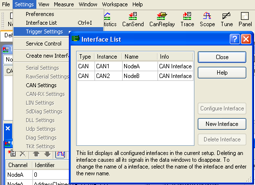
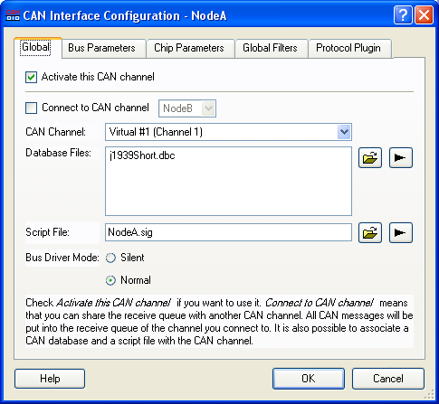
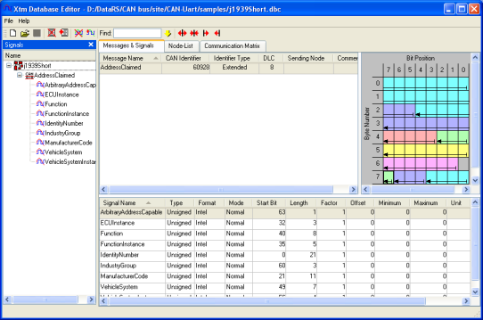
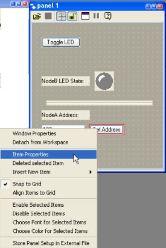
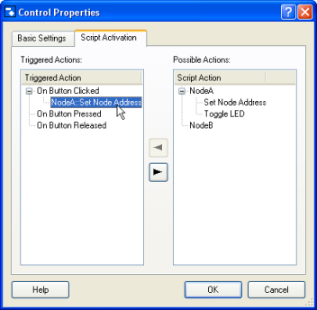
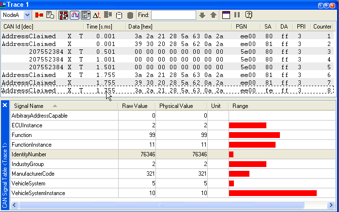
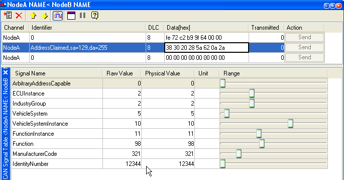
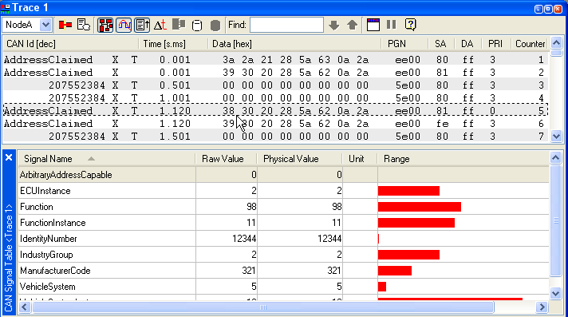

Chapter 6
J1939.c CAN Bus plus RS232 (continued)
Michael Eisele's Xtm CAN bus simulator
<< back to main page<< previous chapter (Vector's CANoe CAN bus simulator)
(The "J1939 Address Claiming" Microchip sample bug) next chapter >>
| Abstract
of
the 1rst
Chapter: Microchip provided source code  for J1939.c
CAN library for J1939.c
CAN library  (Kim
Otten et al.), plus Application Maestro generated
code UARTIntC.c, were used to implement a bare-bones system
with a 2-node CAN bus, where node #129 upon receiving commands from
#128
to toggle a LED also output strings "ON" and "OFF" thru the RSR23. (Kim
Otten et al.), plus Application Maestro generated
code UARTIntC.c, were used to implement a bare-bones system
with a 2-node CAN bus, where node #129 upon receiving commands from
#128
to toggle a LED also output strings "ON" and "OFF" thru the RSR23.Abstract of the 2nd Chapter: We kept the 2 nodes #128 and #129 exchanging messages, and added a 3rd node, #130, listening to them, and reporting to the PC. Everything addressed to our smart node #130 was send to our PC's Terminal program, dumping the affected RxBuffers to the UART. Abstract of the 3rd Chapter: Our smart node #130 was put in ListenOnly mode, all masks to zeros - a true "spy", now. But because the firmware J1939.c generates so few messages, the overall result is not much exciting. Abstract of the 4th Chapter: So we want to improve our basic firmware, but that means going deeper into understanding the SAE J1939 protocol (automotive, commercial vehicles, etc.). We could use some help in that, and luckily there are at least 2 free "demos" available which we can use to simulate the bus. Abstract of the 5th Chapter: While learning CAN/J1939 a CAN/J1939 simulator is a nice tool, among others, to test if the NMT behaviour (network management) you have coded and believe is OK, is indeed conforming to the SAE standard. CANoe simulator is a wonderful tool for that, and on top of its price can't be beaten (yes, the limited but functional demo is free). We had a look at just a small parcel of it. |
| Don't
want to miss the next chapter? just drop me
an email to recursos.pt@gmail.com
subject: J1939 CAN, and I will notify you. No other use will be made of your e-mail address. |
As we said before:
Michael
Eisele's Xtm
"is a software environment used to
control embedded network nodes (electronic control units). It can also
be used to display and modify the inner states of that network nodes.
Moreover it's possible to visualize the communication of embedded
network nodes, to analyze it and, if required, to replace missing
network nodes by simulation its network behaviour."
The current demo version 3.7 (Aug 03 2005) is available here.
Xtm
V3.7, 03 Aug 2005, approx. 3,5MB
Reading the help files and studying the samples did not take us very far, therefore we tried and request some guidance from Michael.
Reading the help files and studying the samples did not take us very far, therefore we tried and request some guidance from Michael.
Meanwhile Michael kindly prepared a sample implementing about the same functionality as the CANoe's example of the last chapter - the Address Claimed message of the J1939 Address Claiming NMT procedure.
- The "J1939 Address Claiming" sample Xtm configuration
- Xtm's nodes Script language
- Xtm comes with graphic panels, too
- What's next?
1 - The "J1939 Address Claiming" sample Xtm configuration
First, Address Claiming is one J1939 network management process (NMT), Address Claimed is a message - one of the Address Management Messages.
Download Xtm from Michael's site, install, them download acl01.zip
, unzip and install underXtm37\Samples\AddressClaim
You will have 4 files:
NodeA.sig
NodeB.sig
AddressClaim.xtm
j1939short.dbc
NodeB.sig
AddressClaim.xtm
j1939short.dbc
This is the short description Michael provided:
| The configuration is as follows: There are two CAN nodes configured. Both are mapped to the same (simulated) hardware channel. Both nodes have a script file attached. Node A has also J1939 DBC file attached. The sample should show some things:
|
Now launch Xtm, accept the disclaimer, then load the configuration file AddressClaim.xtm.
Next choose Interfaces (or Settings\Interface List), to inspect the currente configuration:

We see we are using a CAN interface (it could be also LIN, K-line, Ethernet etc.), with 2 instances, NodeA and NodeB.
Double-click the top line, to open the CAN Interface Configuration of NodeA:

We ignore for now the other tabs, and will just dig a bit more the Global tag.
Notice that for NodeA a Database file j1939Short.dbc is attatched (to display nicely formated trace data in the Trace window), and a ScriptFile NodeA.sig.
NodeB has no database file, hence its trace is not displayed in symbolic form, but in hermetic numbers.
Both nodes are mapped to Virtual #1 (Channel 1), as we have no real hardware.
Selecting j1939Short.dbc then double-clicking the black arrow right to Database Files and choosing Edit opens it:

This is a very short database file, open it with a text editor and this is its contents:
(notice: although accepted by the sw, this is not in true .dbc format - by opening than
saving again the file it will be saved in the correct format)
VERSION ""
NS_ :
BS_ :
BU_ :
BO_ 2147544576 AddressClaimed: 8
SG_ ArbitraryAddressCapable : 63|1@1+ (1,0) [0|0] ""
SG_ IndustryGroup : 60|3@1+ (1,0) [0|0] ""
SG_ VehicleSystemInstance : 56|4@1+ (1,0) [0|0] ""
SG_ VehicleSystem : 49|7@1+ (1,0) [0|0] ""
SG_ Function : 40|8@1+ (1,0) [0|0] ""
SG_ FunctionInstance : 35|5@1+ (1,0) [0|0] ""
SG_ ECUInstance : 32|3@1+ (1,0) [0|0] ""
SG_ ManufacturerCode : 21|11@1+ (1,0) [0|0] ""
SG_ IdentityNumber : 0|21@1+ (1,0) [0|0] ""
2 - The nodes Script language
Back to the window CAN Interface Configuration of NodeA, click the black arrow to the right of Script File, to open (in Qpe text editor - will it evolve to a complete IDE?) the NodeA.sig file.It is C-like, and altough I could not find any reference for some some basic types, it is easy to use.
We can see that 2 timers have been defined, one for the periodic LED status update, the other for the Address Claimed timeout.
The compare_names routine does it the right way (unlike the CANoe example, beaware), the most significant bit is ArbitraryAddressCapable bit, the less significant one is IdentityNumber bit 0.
Something new is the
event on
action "Set
Node Address".
To have a look at it, on the panel1 panel, click the small padlock, lo unlock the panel, then click the button "Set Address", to select it, then right-click it to open the context menu:
To have a look at it, on the panel1 panel, click the small padlock, lo unlock the panel, then click the button "Set Address", to select it, then right-click it to open the context menu:
|  |  |
| Unlock the panel (click on the
small paddlock), right-click for the context-menu. select Item
Properties, select the tab Script Activation |
|
This is where the entry point "Set Node Address" was defined. Interestingly, going back to the script file, changing "Set Node Address" to "Set Node Address_XX" for example, saving and compiling, then re-opening Script Activation, the change is reflected and the contents of the Properties Dialog is updated.
Now lets us see the simulation running. Click the Start icon (after re-compiling if necessary), and after a while use Panel1 to change NodeA address to 129, thus causing a conflict with NodeB:
|  |
| Simulation running: Trace 1 window with CAN Signal Table open. |
On the trace window we can see how on startup both NodeA and NodeB successfully claimed addresses 0x80 (128) and 0x81 (129), then we see NodeA sending the "toggle LED" message every 500ms, and in the last 3 lines we see how NodeA claimed address 0x81, NodeB issued the same claim, and lastly NodeA sends CannotClaimAddress, which is exactly the same PGN as Address Claimed, but with Source Address set to null address (0xFE).
NodeA looses arbitration because it NAME is greater then NodeB's:
NodeA NAME: 2a 0a 63 5a 28 21 2a 3a
NodeB NAME: 2a 0a 62 5a 28 20 30 39
The Messages Window shows the output of the printf debug in NodeA's compare_names() routine:
14 1.754 cn (7): myName[7]= 2a, otherName[7]= 2a
15 1.754 cn (6): myName[6]= 0a, otherName[6]= 0a
16 1.754 cn (5): myName[5]= 63, otherName[5]= 62
17 1.754 Conflict: AddressClaimed: pgn=60928, pri=3, sa=81, da=ff, cres=1
What if you just want to test some message and don't want to build a Panel ? You can use the CAN-Send- Message-Window, and do it imediately:
|  |
| CAN-Send Window (NodeA NAME < NodeB NAME). The sliding cursors ajust the Signals raw values. |
Here we defined NodeA NAME (using the sliding cursors on the bottom window) to be lesser then NodeB's, that is to say, NodeA has higher priority..
I took care so that every field was replicated, except IdentityNumber low byte (which supplies also NAME's low byte), for NodeB this is 12345 (0x3039) and for NodeA 12344 (0x3038).
Running again the simulation then clicking the Send button, the highlighted messaged is injected in the CAN bus:
|  |
| The resulting trace: NodeA wins arbitration because its NAME is the lesser one. |
Now we see that after 1.120ms, when we clicked on CAN-Send Send button, it is NodeA that wins the contention:
NodeA NAME: 2a 0a 62 5a 28 20 30 38
NodeB NAME: 2a 0a 62 5a 28 20 30 39
The Messages Window shows the output of the printf debug in NodeA's compare_names() routine:
10 1.982 cn (7): myName[7]= 2a, otherName[7]= 2a
11 1.982 cn (6): myName[6]= 0a, otherName[6]= 0a
12 1.982 cn (5): myName[5]= 62, otherName[5]= 62
13 1.982 cn (4): myName[4]= 5a, otherName[4]= 5a
14 1.982 cn (3): myName[3]= 28, otherName[3]= 28
15 1.982 cn (2): myName[2]= 20, otherName[2]= 20
16 1.982 cn (1): myName[1]= 30, otherName[1]= 30
17 1.982 cn (0): myName[0]= 39, otherName[0]= 38
18 1.982 Conflict: AddressClaimed: pgn=60928, pri=0, sa=81, da=ff, cres=1
19 1.982 I (NodeB) loose!
This time the NAME comparision went down to the last bit - the only one that tells one NAME from the other..
[I noticed that the
priority of this message is pri=0, but couldn't find how to fix that]
3 - Xtm
comes with graphic panels and more
Control elements make it possible to modify analog signals and control script-programs, as we saw above.
As an example, this is how the Samples\Panel\Panel.xtm example looks like:
Above you can see also the Graphic-Window which displays analog signals in the form of an oscillograph.
This can be complemented by a Tune Window, where the numeric value of analog signals can be displayed, and values of signals defined as outputs can be changed.
Also not shown, there is a CAN Statistic Window that displays the state and statistic information of all available CAN interfaces.The data is displayed in a table.
Xtm is by the current standards a quite small download, less then 4MB. But it is packed with all the important features, and as soon as one gets used to it, it is quite easy to use.
I hope Michael Eisele in the next versions keeps adding more and more samples, because by playing the samples and modifying them seems to me to be the most agreable way of learning the (hiden) details of his wonderful program.
4 - What is next?
Again I am going slower than antecipated, my productivity is down to one chapter every month. Rats!I hope next time to be able to go back to the firmware and hardware, before that stuff gets buried forever in my drawer.
Our goal is still to improve the NMT behaviour of our small 3 PIC system. Slowly, slowly...
Stay with us, may be we will get somewhere!
| Don't
forget: if you don't
want to miss the next chapter, just drop me
an email to recursos.pt@gmail.com
subject: J1939 CAN, and I will notify you. No other use will be made of your e-mail address. |
And that's all, folks.
Please let me know of any broken links, missing parts etc. you may find here.
Next issues will become more sophisticated - I hope!.
<< back to main page
<< previous chapter (Vector's CANoe CAN bus simulator)
(The "J1939 Address
Claiming" Microchip sample bug) next chapter >>
©Rec (recursos.pt@gmail.com)
06-04-27